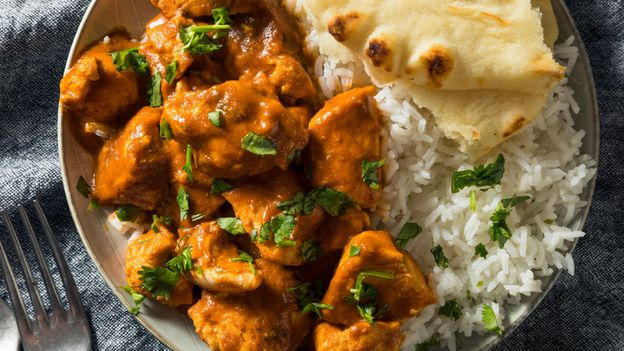

Account
Home
Search
Im feeling lucky
Gallery
Article of the day
History
Favourites
Cuisines

Indian cuisine consists of a variety of regional and traditional cuisines native to the Indian subcontinent Given the diversity in soil, climate culture ethnic groups, and occupations, these cuisines vary substantially and use locally available ingredients.
Indian food has been influenced by religion cultural choices and traditions. Historical events such as invasions, trade relations, and colonialism have played a role in introducing certain foods to India.
indian cuisine has influenced other cuisines across the world, especially those from Europe Britain the Middle East Southern Africa East Africa Southeast Asia North America Mauritius Fiji Oceania and the Caribbean
History
Indian cuisine reflects an 8,000-year history of various groups and cultures interacting with the Indian subcontinent, leading to diversity of flavours and regional cuisines found in modern-day India. Later, trade with British and Portuguese influence added to the already diverse Indian cuisine
prehistoric and indus valley Civilisation
After 9000 BCE, a first period of indirect contacts between Fertile Crescent and Indus Valley civilisations seems to have occurred as a consequence of the Neolithic Revolution and the diffusion of agriculture. Wheat and barley were first grown around 7000 BCE, when agriculture spread from the Fertile Crescent to the Indus Valley. Sesame and humped cattle were domesticated in the local farming communities. Mehrgarh is one of the earliest sites with evidence of farming and herding in South Asia. By 3000 BCE, turmeric, cardamom, black pepper and mustard were harvested in India.

From around 2350 BCE, evidence for imports from the Indus to Ur in Mesopotamia has been found, as well as Clove heads thought to originate from the Moluccas in Maritime Southeast Asia, which were found in a 2nd millennium BC site in Terqa. Akkadian Empire records mention timber, carnelian and ivory as being imported from Meluhha by Meluhhan ships, Meluhha being generally considered as the Mesopotamian name for the Indus Valley Civilisation.
Vedic age
The ancient Hindu text Mahabharata mentions rice and vegetable cooked together, and the word "pulao" or "pallao" is used to refer to the dish in ancient Sanskrit works, such as Yājñavalkya Smṛti. Ayurveda, ancient Indian system of wellness, deals with holistic approach to the wellness, and it includes food, dhyana (meditation) and yoga.
Antiquity
Early diet in India mainly consisted of legumes, vegetables, fruits, grains, dairy products, and honey.Staple foods eaten today include a variety of lentils (dal), whole-wheat flour (aṭṭa), rice, and pearl millet (bājra), which has been cultivated in the Indian subcontinent since 6200 BCE.The Sangam literature, which is specific to South India, mentions that fish, crab, forest cattle, pork, monitor lizard, and poultry were consumed in the region together with a variety of millets, sago, sugarcane, dairy products, honey, and rice.
ingredients
Staple foods of Indian cuisine include pearl millet (bājra), rice, whole-wheat flour (aṭṭa), and a variety of lentils, such as masoor (most often red lentils), tuer (pigeon peas), urad (black gram), and moong (mung beans). Lentils may be used whole, dehusked—for example, dhuli moong or dhuli urad—or split. Split lentils, or dal, are used extensively. Some pulses, such as channa or cholae (chickpeas), rajma (kidney beans), and lobiya (black-eyed peas) are very common, especially in the northern regions. Channa and moong are also processed into flour (besan).

Many Indian dishes are cooked in vegetable oil, but peanut oil is popular in northern and western India, mustard oil in eastern India, and coconut oil along the western coast, especially in Kerala and parts of southern Tamil Nadu.Gingelly (sesame) oil is common in the south since it imparts a fragrant, nutty aroma. In recent decades, sunflower, safflower, cottonseed, and soybean oils have become popular across India.Hydrogenated vegetable oil, known as Vanaspati ghee, is another popular cooking medium.Butter-based ghee, or deshi ghee, is used commonly.
Many types of meat are used for Indian cooking, but chicken and mutton tend to be the most commonly consumed meats. Fish and beef consumption are prevalent in some parts of India, but they are not widely consumed except for coastal areas, as well as the north east. The most important and frequently used spices and flavourings in Indian cuisine are whole or powdered chilli pepper (mirch, introduced by the Portuguese from Mexico in the 16th century), black mustard seed (sarso), cardamom (elaichi), cumin (jeera), turmeric (haldi), asafoetida (hing), ginger (adrak), coriander (dhania), and garlic (lasoon). One popular spice mix is garam masala, a powder that typically includes seven dried spices in a particular ratio, including black cardamom, cinnamon (dalchini), clove (laung), cumin (jeera), black peppercorns, coriander seeds and anise star. Each culinary region has a distinctive garam masala blend—individual chefs may also have their own.